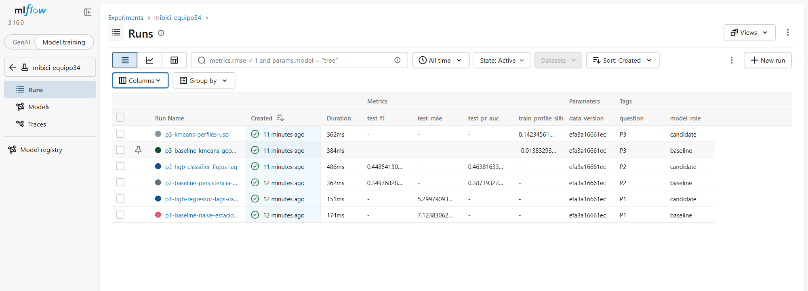
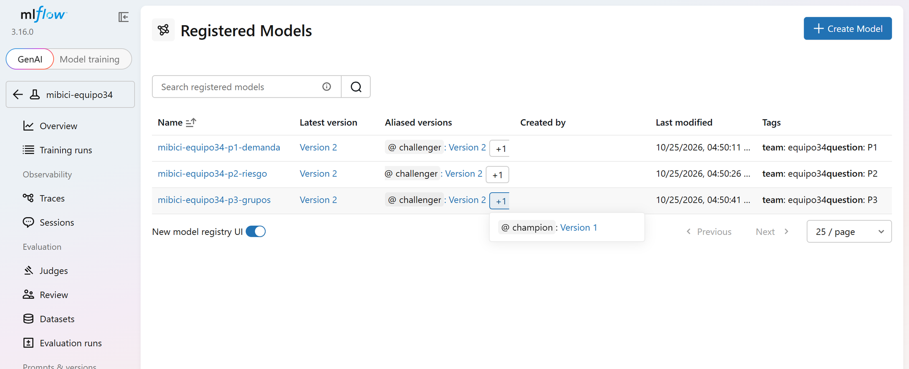
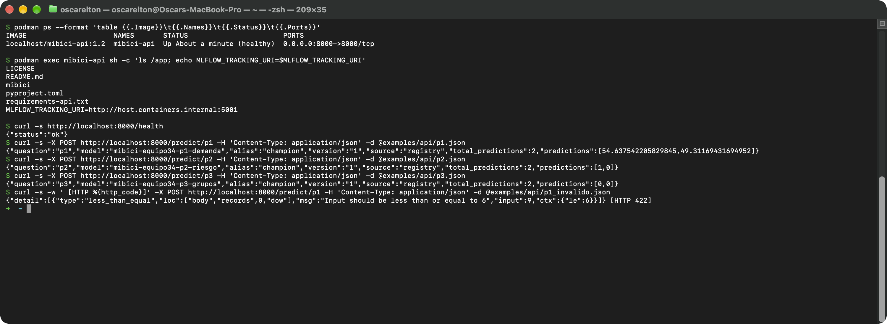
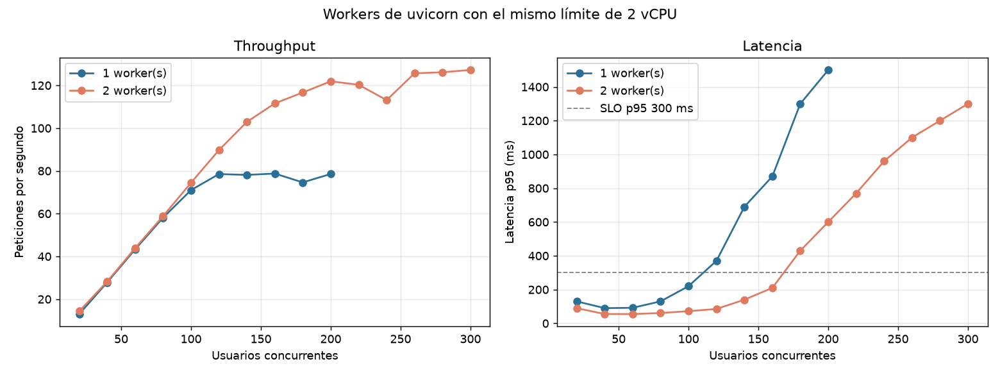
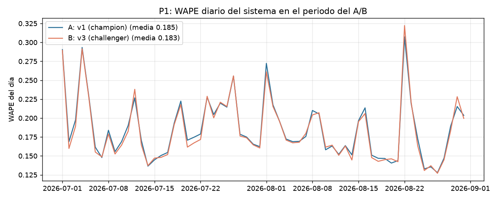

TC5061 · Operaciones de aprendizaje automático · Proyecto final
Demanda, riesgo de desbalance y grupos de estaciones del sistema de bicicleta pública de Guadalajara
El problema
| # | Pregunta | Formulación | Usuario y decisión |
|---|---|---|---|
| P1 | ¿Cuántos viajes saldrán de cada estación? | Regresión, estación-día, horizonte 1 día | Operador: planeación de flota diaria |
| P2 | ¿Qué estación quedará vacía o llena? | Clasificación, siguiente bloque de 3 h: |llegadas − salidas| ≥ 0.5 × capacidad | Rebalanceo: qué estaciones visitar, en línea |
| P3 | ¿Qué estaciones se usan igual? | Clustering del perfil horario de uso | Planeación urbana: ubicar estaciones y campañas |
La solución
Portal de datos abiertos → Parquet. Elimina datos personales. data_version en el manifiesto
features.py: lags con shift ≥ horizonte, calendario, perfiles. DeepChecks valida
ingest · train · search · register · retrain · abtest
64 runs: params, métricas, firma, gráficas, git_commit
@champion / @challenger con etiquetas de linaje
lint, pytest, bandit, pip-audit, imagen, prueba con Compose, GHCR
MLflow + API FastAPI; la API descarga el champion del registry
capacidad, latencia y CPU/memoria por escenario
costo por petición y por predicción, rightsizing
drift contra entrenamiento y misma temporada
-e retrain → v3 @challenger
bootstrap por estación, decisión y promoción explícita
uso previsto, segmentos, riesgos éticos
Estructura y experimentación
mibici/; notebooks solo para explorar; toda la configuración y la semilla en config.py.data/manifest.json con hashes. Cada run guarda data_version y train_data_hash.make all = ingesta + 64 runs + registro, en un entorno aislado (python_env.yaml, uv).git_dirty=false.
Experimento mibici-equipo34 en MLflow: runs por pregunta con su etapa de trabajo.
Resultados
| Pregunta | Métrica (prueba, may-ago 2026) | Mejor baseline | Champion | Champion |
|---|---|---|---|---|
| P1 Demanda | WAPE (menor es mejor) | 0.261 | 0.196 | HistGradientBoosting · −25 % de error · ~5 viajes por estación-día |
| P2 Riesgo | PR-AUC (prevalencia 2.5 %) | 0.388 | 0.462 | HistGradientBoosting + umbral elegido en validación |
| P3 Grupos | Estabilidad ARI (train vs. 2026) | 0.271 | 0.446 | KMeans k = 3 (silueta 0.142) |
Modelo y Registry
@champion sirve en la API; @challenger se evalúa y se consulta con ?alias=challenger.source_run_id · git_commit · data_version · train_data_hash · métrica de selección.models:/…@alias y se predice el ejemplo; si falla, el registro falla.
Los tres modelos registrados con sus aliases (captura de la entrega de MLflow; después del reentrenamiento, el challenger de P1 es v3).
Despliegue
docker compose up --wait levanta MLflow + API con healthchecks y límites de CPU/memoria.
P1, P2 y P3 responden desde el contenedor con "source": "registry" y la versión del champion; una petición inválida devuelve 422.
CI/CD con GitHub Actions
mlflow y responde 200; petición inválida → 422.main protegida, GitHub Flow, Conventional Commits; más de 30 Pull Requests integrados.Pruebas de carga con Locust
| Workers | Capacidad | p95 | Memoria |
|---|---|---|---|
| 1 | 71 RPS | 220 ms | 231 MiB |
| 2 | 112 RPS | 210 ms | 472 MiB |
Capacidad = escalón con más RPS y p95 ≤ 300 ms. API limitada a 2 vCPU y 2 GB.

RPS y latencia con 1 y 2 workers de uvicorn en la prueba de estrés por escalones.
Monitoreo · Continuous Training · A/B testing
-e retrain con datos hasta junio de 2026 → v3 @challenger.| Jul-ago 2026 | v1 | v3 | IC 95 % de B − A |
|---|---|---|---|
| WAPE | 0.1802 | 0.1782 | [−0.0036, −0.0004] |
| MAE | 4.87 | 4.82 | [−0.100, −0.011] |
Decisión: promover v3 (P = 0.998). La promoción es explícita (--promote), no automática.

WAPE diario del champion v1 y el challenger v3 en el periodo que ninguno vio (bootstrap por estación, 2,000 remuestreos).
FinOps
| AWS us-east-1, On-Demand | 1 worker | 2 workers |
|---|---|---|
| Peticiones por hora a capacidad | 255,662 | 401,723 |
| USD por millón de peticiones (t3.small) | 0.0814 | 0.0518 |
| USD por millón de predicciones (t3.small) | 0.00180 | 0.00114 |
| USD por millón de peticiones (t3.medium) | 0.1627 | 0.1036 |
Costo por petición = costo por hora / peticiones por hora a capacidad (p95 ≤ 300 ms). Estimaciones comparativas.
Gobernanza · Model Card
| Segmento P1 | WAPE v1 |
|---|---|
| Estaciones existentes | 0.174 |
| Estaciones nuevas (98) | 0.287 |
| Fin de semana o festivo | 0.225 |
Decisiones de MLOps
| Decisión | Por qué |
|---|---|
| Partición temporal y lags con shift ≥ horizonte | Un split aleatorio filtraría el futuro y sobrestimaría el desempeño; está probado en tests/. |
| Registry como fuente de verdad (imagen sin modelos) | Promover o revertir es mover un alias; el código y el modelo se versionan por separado. |
| Promoción explícita después del A/B | El reentrenamiento es automático de punta a punta, pero una persona aprueba qué llega a producción. |
| Drift contra dos referencias | Comparar con la misma temporada separa el cambio estructural de la estacionalidad. |
| Estabilidad sobre silueta en P3 | Un grupo que cambia cada trimestre no sirve para planear. |
| Prueba del sistema con Compose en CI | Los errores de integración (red, rutas de artefactos, versiones de MLflow) aparecen antes de llegar a main. |
| Capacidad medida antes de dimensionar | Locust mostró que la CPU, no la memoria, limita; de ahí 2 workers y una instancia más chica. |
Demo y cierre
Respuesta: "version": "1", "source": "registry", 54.6 y 49.3 viajes esperados (reales: 56 y 43). Swagger en localhost:8000/docs.
MODEL_CARD.mdTC5061_Proyecto_Final_Equipo34.mp4 (2-5 min)